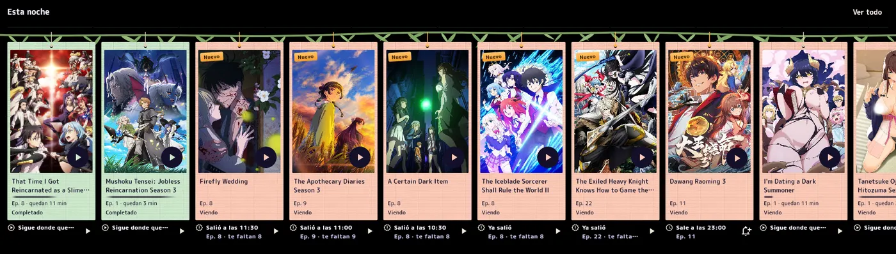
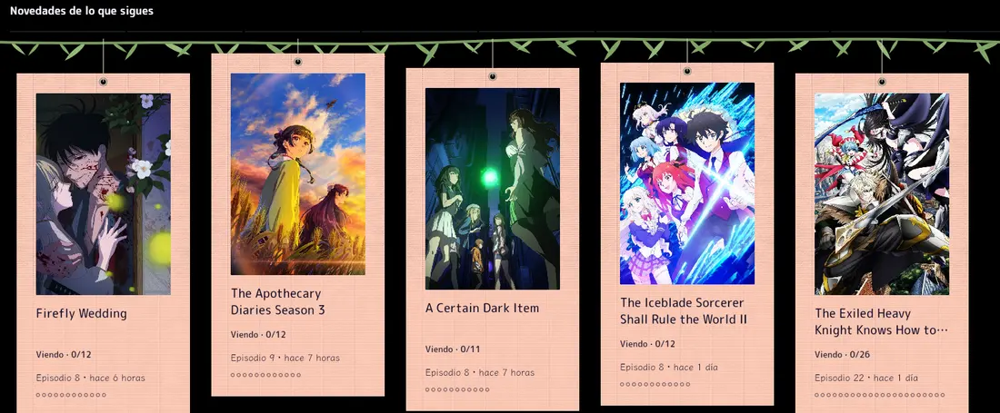

Tres decisiones para la próxima versión: cómo se ve Esta noche cuando tiene muchos ítems, qué animaciones sumar y qué arreglos de rendimiento entran ya. Las maquetas usan la piel Pastel en rama y pósters de tu biblioteca. Elige una alternativa, marca las animaciones y copia tu elección con el botón de abajo.
La fila mezcla tres cosas: para seguir (lo que dejaste a medias), salió hoy (un episodio nuevo, a veces con varios atrasados) y más tarde (sale hoy y tiene aviso). Con 10 o más ítems usa la franja angosta vieja de Continuar, sin piel, con una leyenda de dos líneas abajo. Al lado de Novedades se ve más pobre.


Trece animaciones salidas del inventario del código. Cada una tiene su demo: pruébala y marca las que quieras. Las cinco primeras vienen marcadas porque son las que más se notan y menos cuestan. Duraciones: estándar 200 ms, enfatizada 350 a 500 ms con curva (.05, .7, .1, 1), salida con (.2, 0, 0, 1).
Lo que encontró la revisión del código de dibujo. A la izquierda, lo que se arregla ahora: riesgo bajo y ningún cambio visible. A la derecha, lo que espera porque cambia cómo se dibuja el papel y hay que compararlo a ojo antes. No hay cifras inventadas: se mide después, en tu máquina.
El reproductor no se toca en ninguno de los dos grupos.